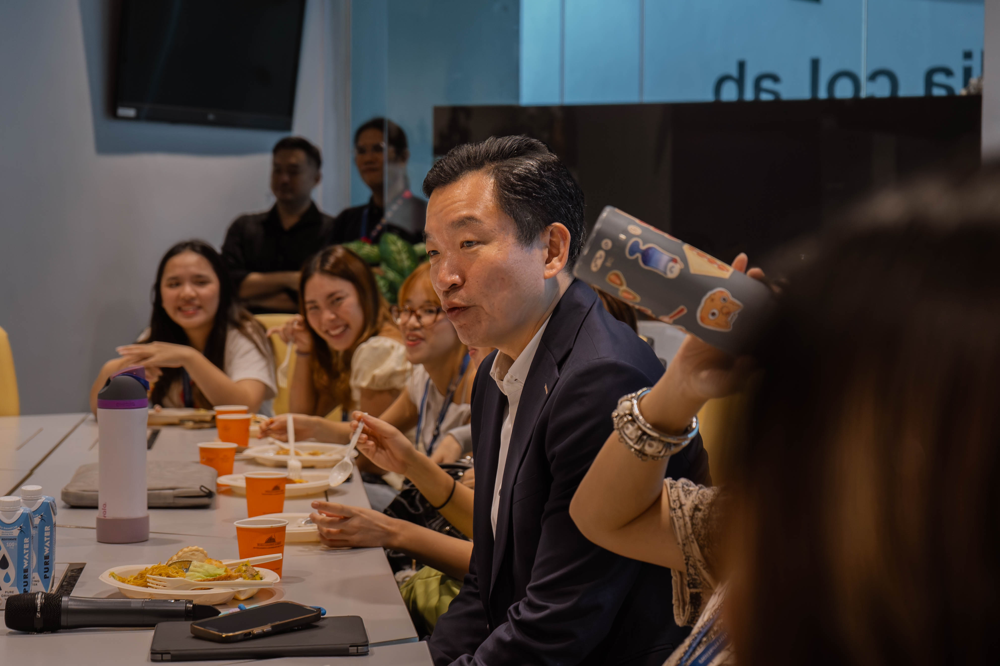
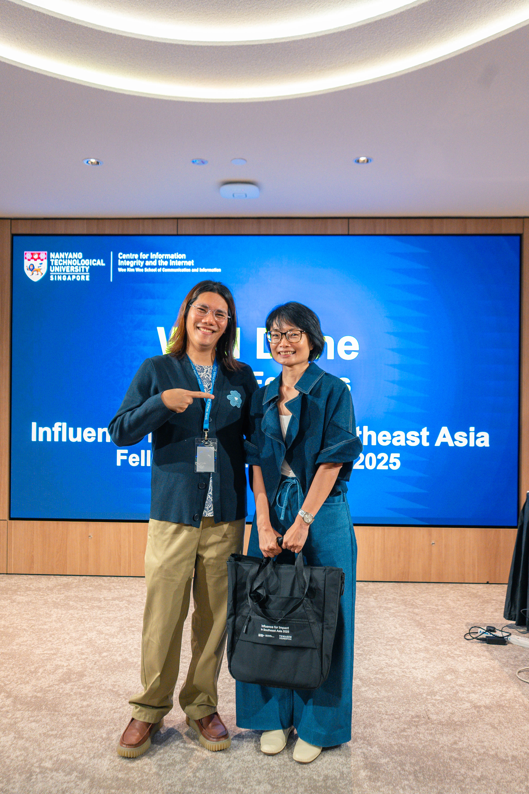

Highlights
Moments that stood out

An opening ceremony with distinguished guests
The in-person week opened at the Wee Kim Wee School with addresses from Senior Parliamentary Secretary Eric Chua and Co-HASS Dean Prof. Jon Wilson, followed by keynotes from Filipino broadcast journalist Atom Araullo and Singapore science creator Kong Man Jing.

Team CreatorBase wins the hackathon
Six teams pitched solutions to challenges in the creator economy. The winning team, CreatorBase, proposed an educational resource hub to help creators handle sponsorships transparently — praised by judges for its immediate feasibility and scalability across the region.

A cohort that kept creating
Fellows' own posts about the programme drew more than 130,000 video views across Instagram and TikTok, and external coverage — in English, Khmer, and Vietnamese — ran 94% positive with no negative mentions.

A network that outlasted the programme
Every fellow stayed in touch with at least one other after the programme ended — many kept posting about i-SEA for months, and one credited the fellowship as a key factor in landing his dream job.